Above: My family (my parents and my sister) on our trip to the Northeastern United States, where we were currently in New York City!
My Travel Story
Ever since I was young, my parents wanted us to be able to travel so we could experience the world around us, and know that there's something much bigger than us out there.
This started with local camping trips, then it grew to family road trips a few states over, to then flying across the country to go to unvisited states and National Parks.
So, by the time I was 18, I had visited every state in the U.S.
I am so grateful I have been fortunate enough to see the beautiful country I get to live in and the many different cultures within.
My wonderful parents also not only believed in just visiting the state for tourist attractions.
They had a goal to visit historical sites, National Parks, museums, and other culturally and historically significant areas of the US so we could learn while we had fun traveling.
Louisiana is easily one of my favorite states to visit.
From the lush, vibrant greenery to the stunning coastline, there's so much to love about this state.
The various cultural influences (like France, Spain, and many African countries) blend together to make this the cultural melting pot that everyone loves.
The state also brings in a beautiful blend of swamp, coast, and forest that make it feel like a magical mysticland.
MUST-SEES
Mardis Gras Festival
The parades, music, and seafood speak for themselves.
This festival is unlike anything else, with the bright floats, music blasting, and beaded jewelry being thrown out.
Tabasco Factory and Museum
Who doesn't love tabasco, or at least love the cultural significance of it?
Tabasco can be seen in the background of almost any television show or movie, and it's worth taking a look at where it all started!
Shown below: The Mardis Gras festival and Avery Island's Tabasco museum and plant.
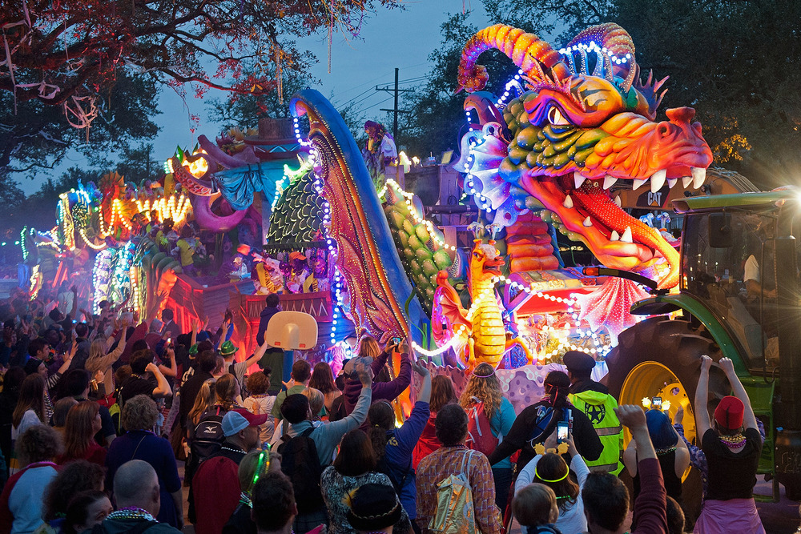
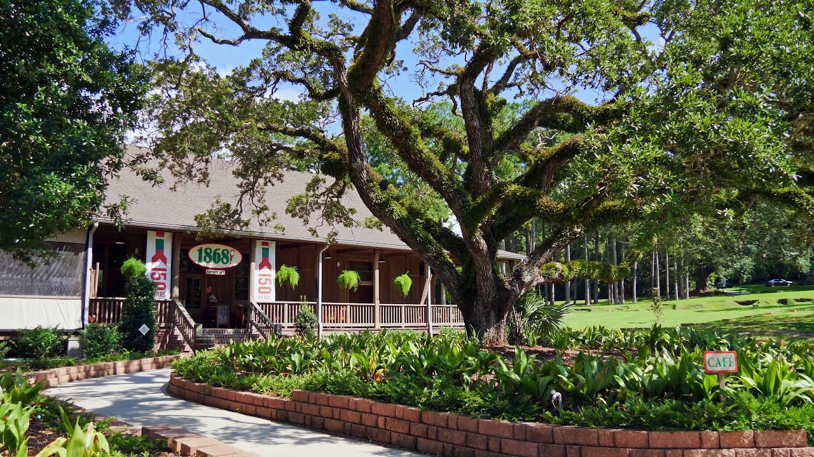
New York, the Empire State
New York just has so much to offer that offer a unique travel experience.
New York City, known as the Big Apple, is unlike any other place, with its iconic skyline, endless tourist attractions (like Central Park and the Statue of Liberty) and that unmatched energy of people constantly buzzing around.
But there’s so much more to the state than just NYC; upstate New York is stunning, with its rolling hills, peaceful lakes, and vibrant foliage that make it feel like a different world from NYC.
Being on the Atlantic Coast adds to its charm with access to beaches and scenic coastal views.
Plus, the state’s rich history and famous landmarks make it such a fun place for the family to visit.
MUST-SEES
Statue of Liberty
This iconic statue is probably the most well-known symbol of the United States, representing freedom, hope, and peace.
It is unlike any other statue in the world and visiting it (you can take a ferry to it and go inside!) offers a change to look at the breathtaking skyline and New York harbor through a unique lens.
Central Park
Need a break from the big city? Central Park is a peaceful escape right in the middle of a bustling city, but what's even cooler about is it that it has so much to do just in the park.
You can find streams, ponds, picturesque paths to walk on, biking trails, food carts, and beautiful attractions like bridges and terraces.
Niagara Falls
Niagara Falls is one of the most breathtaking natural wonders in the country, with its thundering cascades and misty spray creating an unforgettable experience.
Visiting the falls offers incredible views, whether you’re taking a boat tour like the Maid of the Mist to get close to the action or exploring the scenic trails in the surrounding state park.
Shown below: A fountain and pond in Central Park and Niagara Falls.
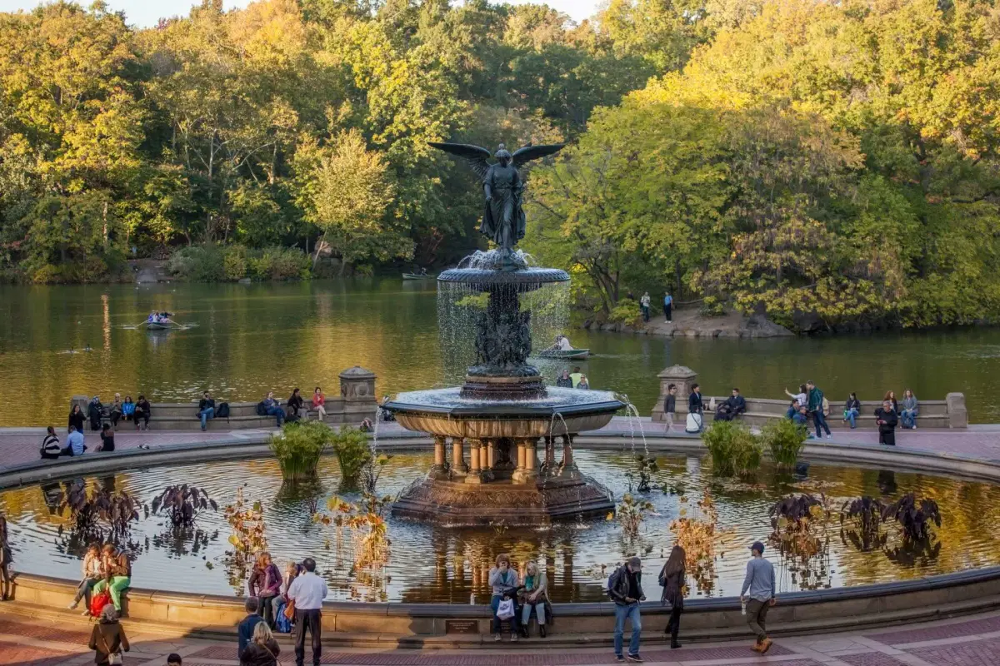
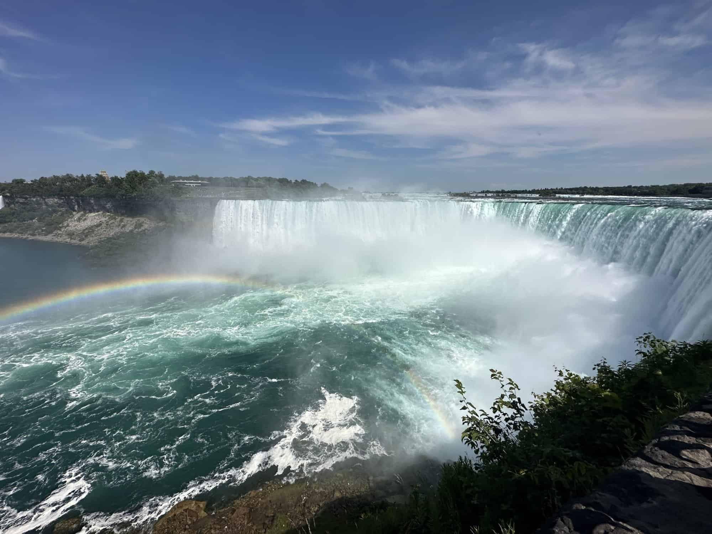
Massachusetts, the Bay State
Massachusetts has so much charm and history, which is why it’s one of my favorite states.
Boston is full of old historical sites like the Freedom Trail and Faneuil Hall that make you feel connected to the country’s past, and the city itself has such a cool blend of modern and colonial vibes.
Beyond Boston, the state’s greenery is gorgeous, especially during the fall when the trees turn bright red and orange.
Plus, being on the Atlantic Ocean means there are beautiful coastal spots to explore, from Cape Cod to the rocky North Shore.
It’s the perfect mix of history, nature, and seaside views.
MUST-SEES
The Freedom Trail
This trail is a great way to hit up all the main historical sites in Boston at one time.
It connects 16 historical sites, including the Massachusetts State House and the Old North Church.
It’s a great way to explore the city’s rich history and learn about key events in the American Revolution.
Perfect for history lovers and anyone wanting to see Boston’s most iconic landmarks.
Paul Revere House
This is not just any old house in Boston, it's the house to visit in Boston.
It is where the famous patriot lived during the American Revolution.
It’s a great place to learn about Revere’s role in the Midnight Ride and explore colonial life.
The house is one of the oldest buildings in the city and offers a unique glimpse into America’s early history.
Shown below: The Freedom Trail that tourists can follow around town and the Paul Revere House.
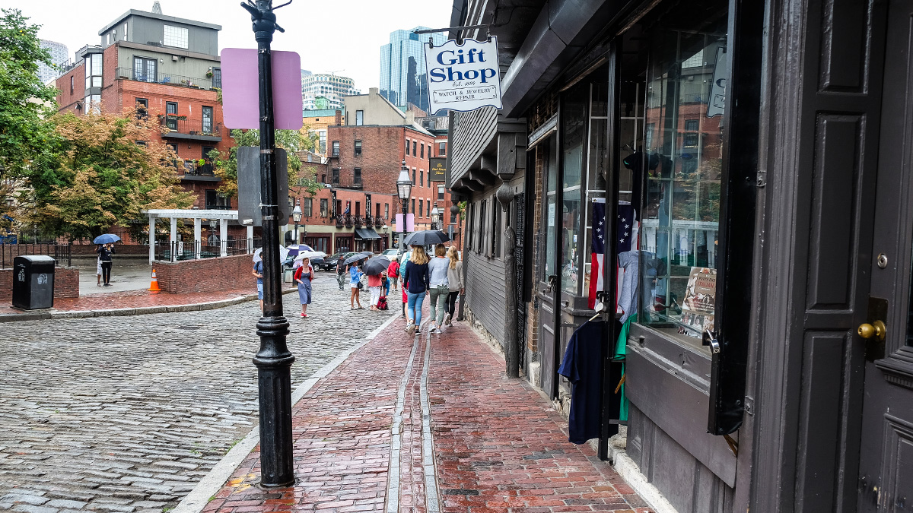
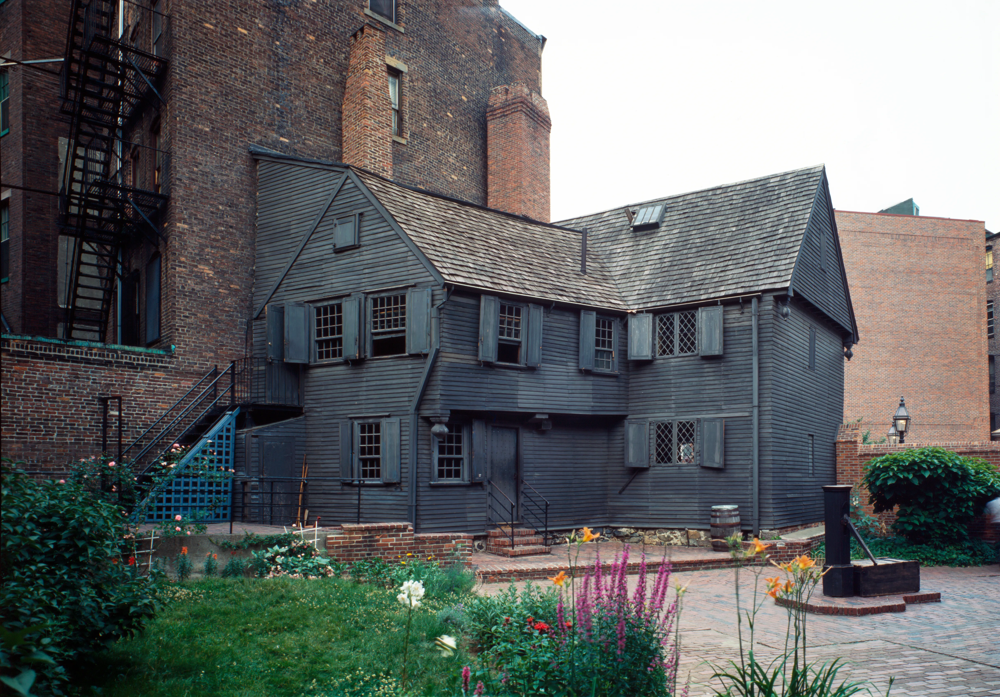
Tennessee, the Volunteer State
Tennessee is such a beautiful state in so many ways.
he greenery is amazing, especially in the Great Smoky Mountains, which are so peaceful and full of life.
I also love how many historical sites there are, from Civil War battlefields to charming small towns that feel like stepping back in time.
Plus, Nashville adds such a fun vibe with its live music, unique culture, and great food.
MUST-SEES
Great Smoky Mountains National Park
Known for its stunning scenery, hiking trails, and diverse wildlife, this National Park is a must-visit for nature lovers.
The views from Clingmans Dome and the peaceful waterfalls are unforgettable, as well as the countless types of wildlife you're sure to see.
Graceland
Graceland is more than just Elvis Presley’s former home—it’s a cultural landmark that offers a glimpse into the life and legacy of the King of Rock ‘n’ Roll.
His mansion is full of amazing exhibits, from his iconic jumpsuits to his car collection.
Visiting Graceland is like stepping into music history, and it’s a must for any fan of his music or pop culture.
Shown below: Clingman's Dome in Great Smoky Mountains National Park and Elvis Presley's old house, Graceland.
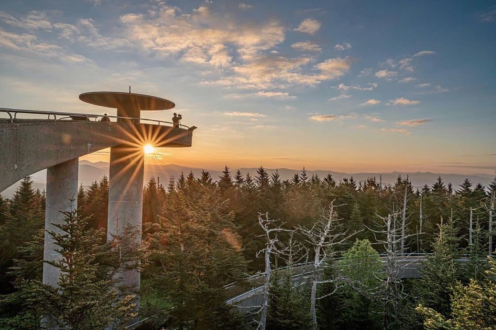
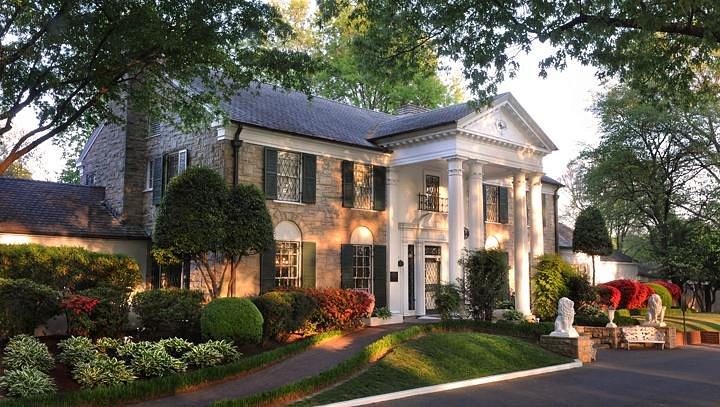
South Carolina, the Palmetto State
South Carolina is easily one of my top states because it has such a great mix of nature and history.
The ever-surrounding greenery and beautiful beaches along the Atlantic Ocean make it such a relaxing place to visit.
Charleston is especially cool with its cobblestone streets, colorful historic homes, and incredible food.
MUST-SEES
Charleston's Historic District
Charleston’s Historic District is like stepping back in time with cobblestone streets, gas lanterns, and preserved historic homes.
Rainbow Row and the Battery showcase the city’s charm and rich history, and walking through this area is a perfect way to soak in Charleston's culture and character.
Fort Sumter National Monument
Fort Sumter is a key historical site where the first shots of the Civil War were fired.
You must get there by ferry, and the fort offers incredible views and a chance to learn about its pivotal role in American history.
Huntington Beach State Park
Huntington Beach State Park is a peaceful place to go with pristine beaches and scenic marshland trails.
It’s a haven for birdwatchers and wildlife enthusiasts, with chances to spot everything from alligators to herons.
The park’s historic Atalaya Castle adds an extra layer of charm and intrigue to the visit.
Shown below: Old buildings in Charleston's historic district and the bird's eye view of Fort Sumter historic district.
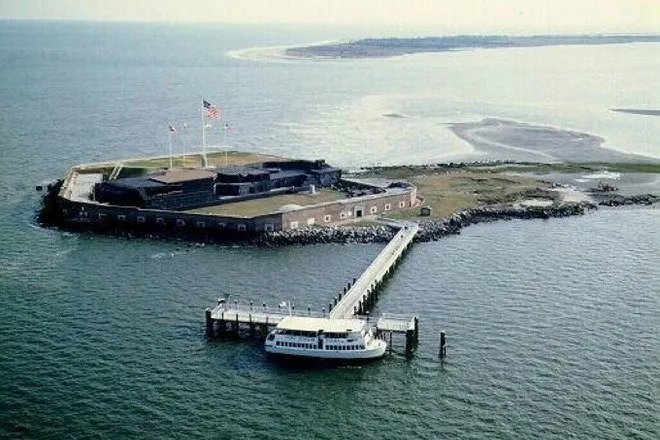
Curious About What Else is Out There?
Check out these two videos below highlighting cool US historical and cultural sites alongside beautiful natural landscapes.
Take a Break
Planning a trip can be stressful, so don't let the stress of planning mask the unforgettable memories travel provides! Planning a trip is the perfect getaway from life's stressors, so while planning a trip, take a deep breath and relax. And, while you're at it, you might as well relax and play this fun flappy game here that will take your mind off crazy trip planning! Let this game remind you to open your wings and fly to new destinations and don't let anything hold you back, because you deserve a break!
Ready to Book a Flight and Travel?
Check out this Tableau chart below to explore data about flight delays, airport delays, route delays, and the chances of your trip getting delayed.
Know what to expect before you book so your travel plans aren't thrown off and you can have a nice, relaxing vacation!

 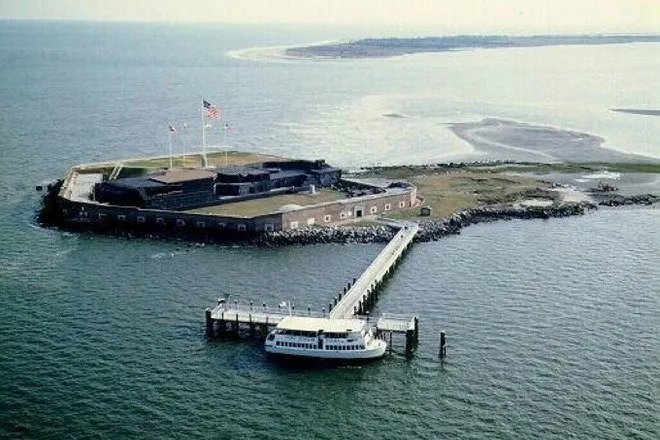
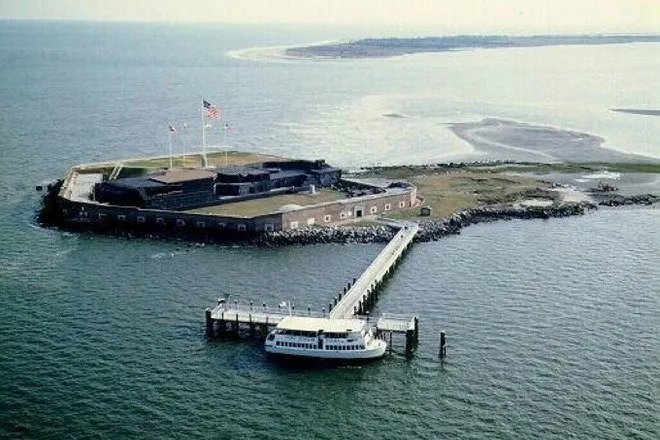